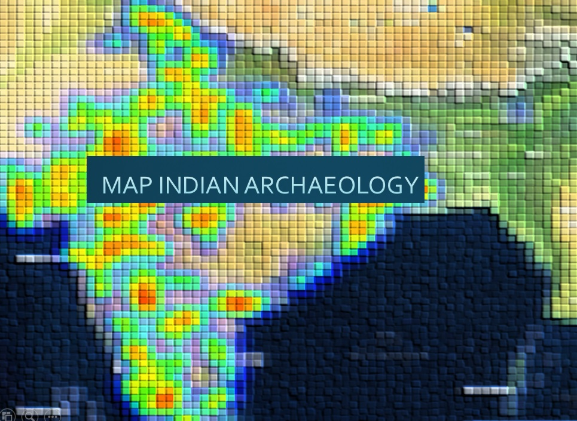
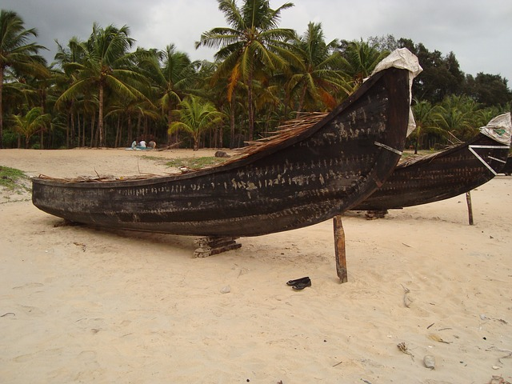

I am a Social Science and Humanities Research Council Postdoctoral Fellow in the Department of Geography at Memorial University of Newfoundland, St John's, Newfoundland, Canada. I created this website as an update to my web presence at McGill University where I completed my PhD (2012). Prior to McGill, I earned my MSc (2002) in GIS and Spatial Analysis in Archaeology at University College London.
My research programme focuses on how knowledge is woven with space and power. I draw from the observation that state-oriented views of archaeology overlook the influence of values and beliefs in the interpretation of archaeology and the changing relationship between science and society. I address these issues by studying the social context of archaeology, which provides a better understanding of epistemology or how we know what we know.
I focus on four lines of research:
(1) Drawing out the changing relationship between archaeology and society by examining societal factors such as foreign policy concerns of states, social unrest, political instability and national styles of science;
(2) Examining the social context of archaeology through relations between local communities and national governments, including the influence of competing research traditions and culture on the practice of archaeology;
(3) Developing appropriate digital methods and tools, including geographic visualization to understand how knowledge, space and power are intertwined; and
(4) Reframing current understandings of archaeology through broader comparative analysis, which in turn can inform new empirical research in archaeology

MINA | Map Indian Archaeology
Developed for Michigan State University’s Institute on Digital Archaeology Method and Practice. MINA is a Web-based dynamic platform that maps Indian archaeology through time and that can enable linking with other dynamic and static geographically-referenced sources of information such as newspapers, journal articles, archaeological data and reports. See it here: MINA
Insights from the 'Cod Road': Archaeology of Saint Pierre et Miquelon
This project examines the changing role of Saint Pierre and Miquelon in the French colonial world during the 17th and 18th centuries. The islands, located in the North Atlantic, are French provinces that are known to have been continually settled since the 1600s.

Northern Kerala Archaeological Project (NorKAP)
NorKAP employs geospatial and geovisualization methods to gain insight into long-term societal change in the pattern and distribution of settlement in the uplands and coast in the Bharathapuzha River Valley.
Practice of Indian Archaeology Watch the temporal animation.
The temporal animation shows the locations of archaeological investigations carried out between 1992 and 2000. The year 1992 marks the demolition of the Babri Masjid in the northern city of Ayodhya. Broadly defined, there are three investigators: the Archaeological Survey of India (Survey), which is the national department for archaeology and heritage management; Indian universities and state departments of archaeology.

Excavations at Parc Safari See 2.5D photorealism.
Field records of an excavated grave are integrated and visualized. Parc Safari is a zoological park located in Hemmingford, Quebec. The watusi grave was one of several excavated in the cemetery.

Health and Social Services in Quebec Spatial analysis.
Maps from spatial analysis on availability of health and social services for linguistic minorities in the Canadian province of Quebec. The maps focus on service availability for English-speakers.